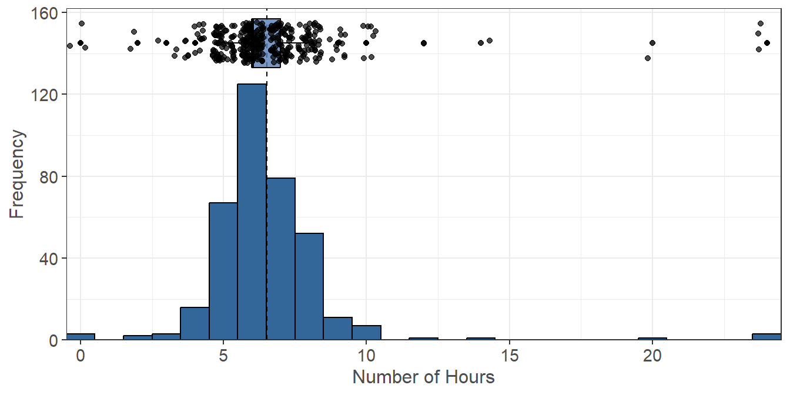
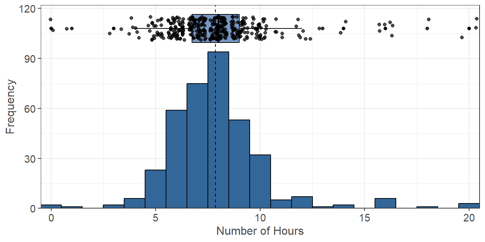
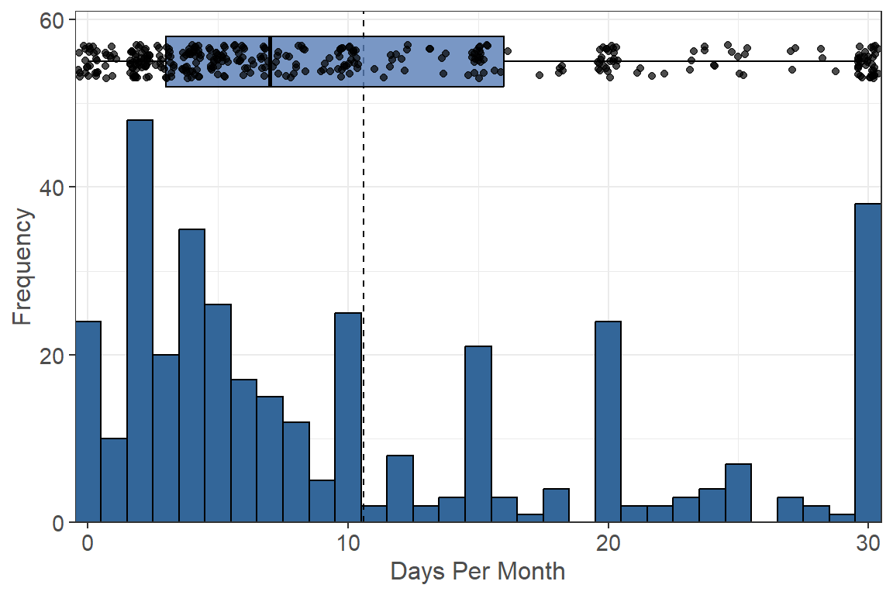
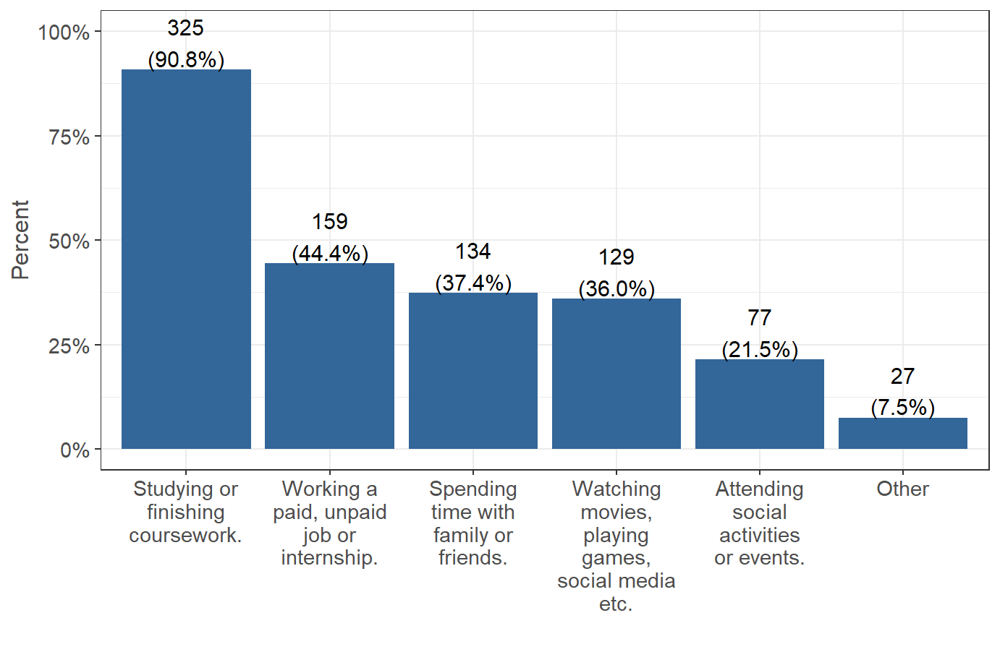

Sleep
The following questions were asked in regards to students sleep patterns. This includes their average nightly sleep during the academic year (week and weekend), if they feel sleep deprived, and what the causes of their sleep deprivation come from. They were also asked if they are tired at work/school, how often they are tired here, and if they have fallen asleep in class in the past year.
Academic Year
On average, during the academic year, how many hours of sleep do you get in a typical 24-hour period? Note that for the week days we have (n=371, 89% of 415 reporting). And for the weekends we have (n=372, 90% of 415 reporting).
During the Week (Monday-Friday)
 Figure 13.1: Weekday Hours of Sleep Distribution
During the Weekend (Saturday-Sunday)
 Figure 13.2: Weekend Hours of Sleep Distribution
During the week, students claim to get an average (denoted by the dotted line) of 6.52 hours per night, with a median of 6 hours. During the weekend, students claim to get an average (denoted by the dotted line) of 7.87 hours per night, with a median of 8 hours. Students get an average of 1.35 more hours of sleep on the weekend versus during the week.
Sleep Deprived
On average, how many times per month do you feel deprived of sleep? (n=367, 88% of 415 reporting).  Figure 13.3: Sleep Deprivation Distribution
Students claim that on average they were feeling sleep deprived (denoted by the dotted line) for 10.6 days out of the month, with a median of 7 days per month.
Causes of Sleep Deprivation
Select the activities that cause you to feel deprived of sleep (Select all that apply).| Measure | Yes (%) |
|---|---|
| Studying or finishing coursework. | 325 (90.8%) |
| Working a paid, unpaid job or internship. | 159 (44.4%) |
| Spending time with family or friends. | 134 (37.4%) |
| Watching movies, playing games, social media etc. | 129 (36.0%) |
| Attending social activities or events. | 77 (21.5%) |
| Other | 27 (7.5%) |
 Figure 13.4: Sleep Deprivation Causes
Tired at Work/School
How frequently do you feel tired while at work or school? (n=370, 89% of 415 reporting). Figure 13.5: Frequency of Tired at Work/School
The most common response that people felt tired at work or school was occasionally (215 people). 111 people claimed that they were always tired, 42 people claimed that they were rarely tired, and 2 people claimed that they were never tired.
Fallen Asleep in Class
Have you fallen asleep in class in the past 12 months? (n=361, 87% of 415 reporting). Figure 13.6: Fallen Asleep in Class (Past Year)
The majority of students (206 people) claim that they have not fallen asleep in class in the past year, while 155 people claim that they have fallen asleep in class.
Eating Habits
Click here to go to the Eating Habits page.
Physical Activity
Click here to go to the Physical Activity page.
Mental Health
Click here to go to the Mental Health page.
Funding
Partially funded by USDA SNAP, known in California as CalFresh, an equal opportunity provider and employer, and the California Department of Social Services. Any use of these results in further work must use the following citation:Center for Healthy Communities, "Basic Needs Survey", June 2021. Retrieved on xx-xxx-xxxx from https://chicocalfresh.github.io/bns-pilot2-website/index.html